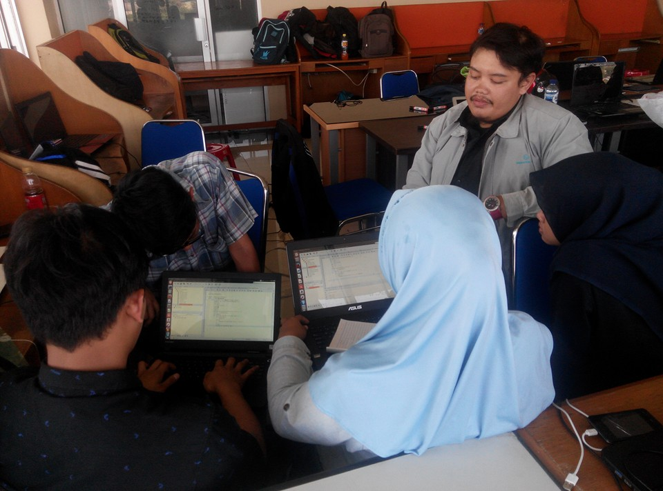
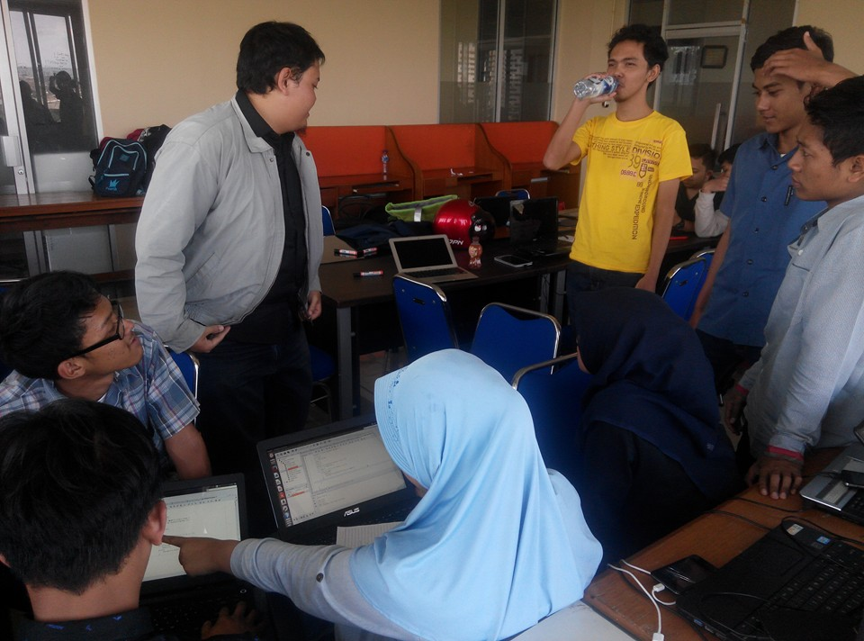

Pindah-pindah ruangan
Kali ini geek studio sudah pindah ruangan dua kali, tapi the show must go on hahaha
nah ini suasana geek studio setelah kedatangan anggota tambahan yang PKL di geek studio :D
Jadi ruangan sebelumnya gak cukup, akhirnya kita pindah ke ruangan depan yang sekarang jadi sengketa hahahaa, katanya nunggu keputusan dari pemkot. :)))
Nah yang pake seragam biru atau hijau, itu siswa-siswi PKL dari Tasik, Cimahi, dan Cianjur :D
Semua belajar gnu/linux, java, dan git hahahahaa
Nah kita seneng coret-coret di kaca? kenapa? secara psikologis ini lebih asik sih hahaha kita tulis, hitung berbagai hal, kita estimasi risk , metode dan lain-lain.
kita juga menggunakan scrum sebagai metodologi yang kita gunakan untuk software development.
yang ini beryl terlalu lama sendiri :)))


Nah ini lagi diskusi mengenai code java, (pencitraan doang)
hahahaa
Nah tunggu apalagi? ayo ikut gabung bareng geek studio hehehehe
oh ya kali ini kita dah pindah ke lantai 5 (sebelumnya di lantai 4) walaupun unofficial hahahaa